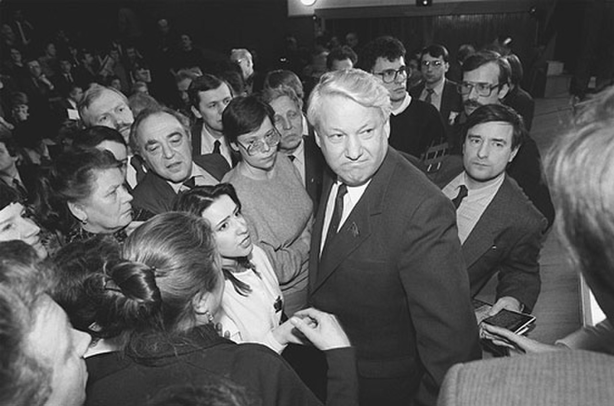
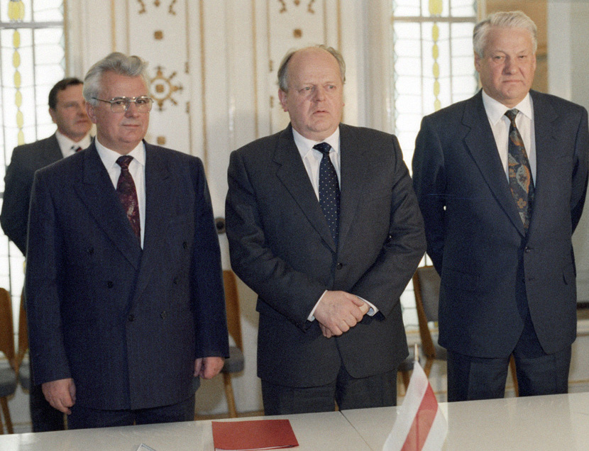
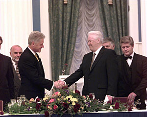

출처: Wikimedia Commons — Presidential Press Service · CC BY 4.0
⏱️ 10초 카드 · 소련 해체와 러시아의 탄생 (1931~2007)
1991 쿠데타 저항소련 해체러시아 초대 대통령충격요법
여는 질문 — 낡은 것을 무너뜨리는 일과, 새것을 잘 세우는 일 중 무엇이 더 어려울까?
이름
한국어보리스 옐친
원어Борис Ельцин
실제 발음보리스 옐친
로마자Boris Yeltsin
영어권Boris Yeltsin
러시아 · 1931~2007
왜 이 사람인가
냉전을 끝낸 '마지막 장면'의 주인공이에요. 탱크 위의 저항으로 쿠데타를 막고 소련을 해체해, 단극·세계화 시대의 문을 열었죠. 동시에 그 뒤의 혼란은 '벽을 부수는 것'과 '새집을 짓는 것'이 다름을 보여 줘요. (탈냉전 → 소련이 사라지다)
생애
우랄 산맥의 노동자 집안에서 태어나 공산당 안에서 출세했어요. 하지만 그는 점차 개혁을 더 빨리, 더 멀리 밀어붙이려 했고, 고르바초프와 부딪치며 '급진 개혁'의 얼굴이 됐죠.
1991년 8월, 보수파가 쿠데타를 일으켜 고르바초프를 가두자, 옐친은 모스크바 거리의 탱크 위에 올라 저항을 외쳤어요. 시민들이 그를 둘러쌌고, 쿠데타는 사흘 만에 무너졌죠. 이 장면으로 그는 단숨에 시대의 영웅이 됐어요.
그해 12월, 옐친은 우크라이나·벨라루스 지도자와 함께 '소련은 더 이상 없다'고 선언하며 소련을 해체했어요(벨로베자 협정). 러시아의 첫 대통령이 됐지만, 급격한 시장 전환은 극심한 혼란과 빈부격차를 낳았죠. 건강과 인기가 모두 무너진 1999년, 그는 한 측근에게 권력을 넘기고 물러났어요 — 그 사람이 바로 푸틴이었죠.
자료로 보기 — 유묵·사진

시민들 속의 옐친 (1989)1989년, 개혁을 외치며 시민들 사이로 파고든 옐친. 권력자가 아니라 '시민의 편'이라는 이미지로 인기를 얻었어요.출처: Wikimedia Commons — ITAR-TASS · CC BY 4.0

소련을 끝낸 세 사람 (1991)1991년 12월, 러시아(옐친·오른쪽)·우크라이나·벨라루스 지도자가 모여 '소련은 더 이상 없다'고 선언했어요. 69년 역사의 초강대국이 이 자리에서 끝났죠.출처: Wikimedia Commons — RIA Novosti · CC BY-SA 3.0

미국 대통령과 악수 (1990년대)냉전의 적이던 두 나라의 정상이 손을 맞잡았어요. 옐친(오른쪽)과 미국 대통령 클린턴. 탈냉전의 새 관계를 보여 주는 장면이에요.출처: Wikimedia Commons — The Clinton White House · 퍼블릭 도메인
남긴 말
“여러분, 군대가 우리를 향해 총을 겨눌 수는 있어도, 진실을 향해 총을 쏠 수는 없습니다.”
1991년 쿠데타 때 탱크 위에 올라 시민들에게 저항을 호소한 말이에요. · 출처: 1991년 8월 모스크바 (널리 인용됨)
“소비에트 사회주의 공화국 연방은 국제법과 지정학적 실재로서 그 존재를 멈춘다.”
1991년 벨로베자 협정 — 소련의 공식적인 끝을 알린 문구예요. · 출처: 벨로베자 협정 (1991.12)
연표
1931우랄(스베르들롭스크) 노동자 집안 출생
1991.8쿠데타에 맞서 탱크 위에서 저항 — 영웅이 되다
1991.12벨로베자 협정 — 소련 해체 주도
1991~99러시아 초대 대통령 · 충격요법과 혼란
1999사임(푸틴에게 권력 이양) · 2007 사망
우랄의 노동자에서 러시아의 첫 대통령으로
우랄의 공장 도시에서 출세해, 탱크 위의 저항을 거쳐 소련을 끝내고 새 러시아를 연 길이에요.
고향 우랄에서 크렘린, 소련을 끝낸 숲을 거쳐 다시 크렘린에서 물러나기까지 — 실제 좌표 위에 표시했어요.
빛과 그림자쿠데타에 맞서 소련의 평화로운 해체와 러시아의 민주주의를 연 용기는 컸어요. 하지만 급격한 '충격요법'은 경제를 망가뜨리고 소수의 부자(올리가르히)를 낳았으며, 체첸 전쟁과 혼란 끝에 권위주의로 가는 길(푸틴)을 열었다는 비판도 받아요.
더 깊이 (고등·일반)
탱크 위의 순간
1991년 8월, 보수파 군부가 고르바초프를 연금하고 권력을 잡으려 했어요. 결정적 순간, 옐친은 의회 앞에 멈춘 탱크 위로 올라가 쿠데타를 '불법'이라 외쳤죠. 수만 명의 시민이 그를 둘러싸 인간 방패가 됐고, 군대는 발포를 거부했어요. 한 사람의 용기와 시민의 연대가 쿠데타를 무너뜨린, 20세기의 상징적 장면이에요.
참고: 1991년 8월 쿠데타와 옐친의 저항
충격요법의 대가
옐친은 계획경제를 시장경제로 단숨에 바꾸는 '충격요법'을 택했어요. 가격 통제가 풀리며 물가가 폭등했고, 국영기업이 헐값에 팔리면서 소수가 막대한 부('올리가르히')를 거머쥐었죠. 평범한 사람들의 저축은 휴지가 됐고, 1990년대 러시아는 극심한 빈곤과 혼란을 겪었어요. '자유'가 곧 '번영'은 아니었던 거예요.
참고: 1990년대 러시아의 경제 전환
푸틴에게 넘긴 권력
건강과 인기가 무너진 옐친은 1999년 마지막 날, 비교적 알려지지 않은 총리 푸틴에게 권력을 넘기고 사임했어요. '러시아를 부탁한다'는 뜻이었지만, 결과적으로 이는 러시아가 다시 강한 1인 권력으로 돌아가는 출발점이 됐죠. 민주주의를 연 사람이, 그 민주주의의 후퇴를 부른 문을 열었다는 역설로 남았어요.